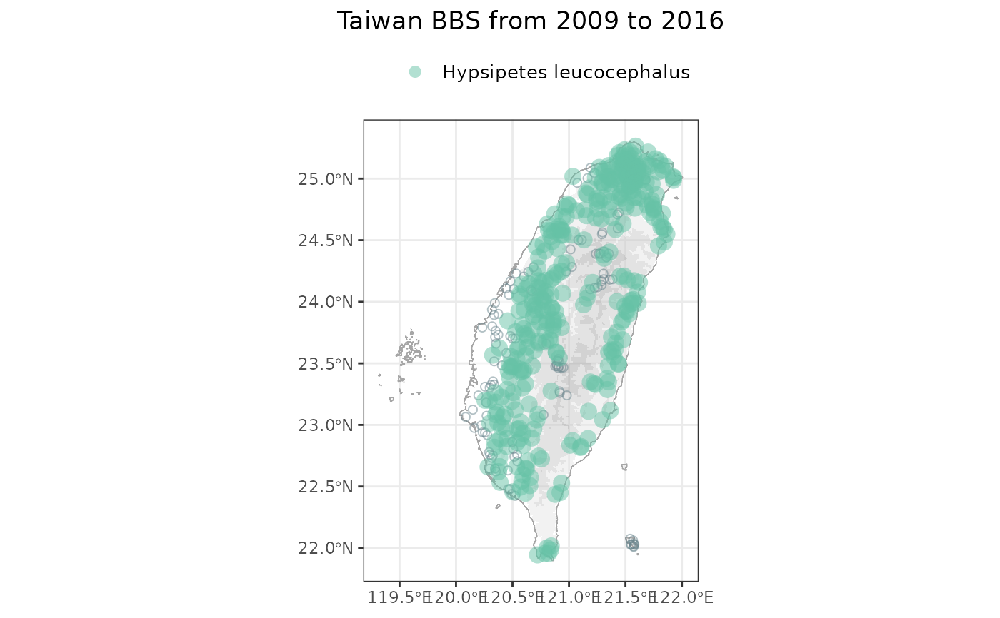

R/bbs_plotmap.R
bbs_plotmap.Rd
Visualizes sites surveyed for breeding birds in Taiwan, highlighting presence and absence of specific species.
bbs_plotmap(data)
a list object derived from the bbs_fetch() function
a distribution map
bbs_plotmap(data = bbs_fetch(target_species = c("Psilopogon nuchalis", "Pycnonotus taivanus"))) #> Joining with `by = join_by(locationID)` 